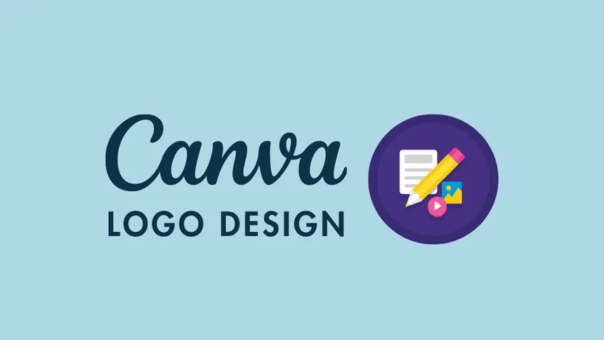
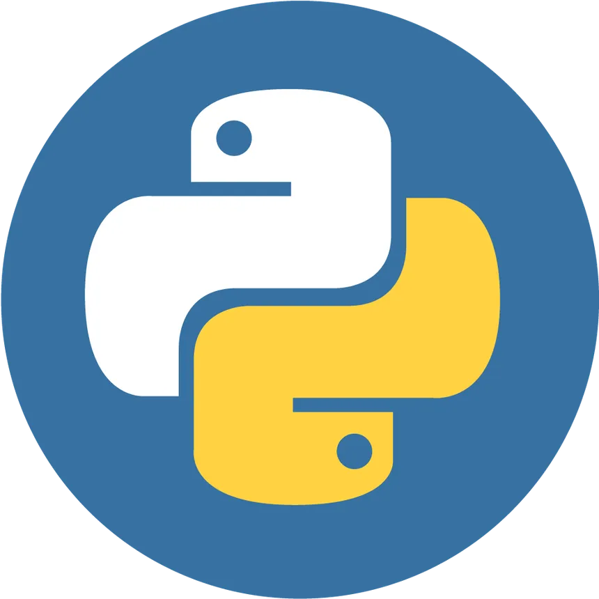
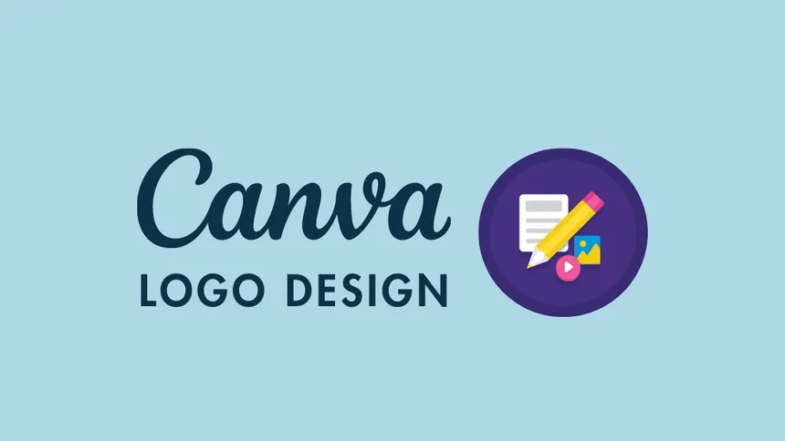
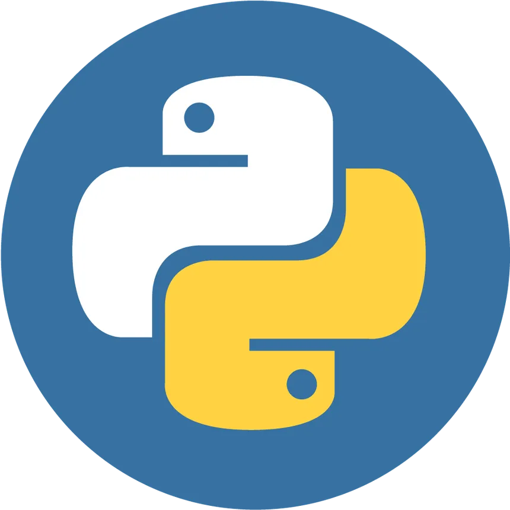

Cbastien Xyth Virtudazo Ebora
My Portfolio


 



About
Welcome to everyone, I am Cbastien Xyth V. Ebora, and I'm thrilled to share with you my experiences and accomplishments in the information technology profession. Having obtained a Bachelor's degree in Information Technology, I have refined my abilities and knowledge across different fields. Project management has been one of my main areas of expertise. I've successfully led and completed many projects in this role, making sure they meet deadlines and surpass expectations. Furthermore, my ability to write in Python has helped me create creative ideas and efficiently streamline procedures. I also have a strong eye for HTML site design and can create interfaces that are both aesthetically pleasing and easy to use. I aim to have a positive impact on the tech industry by my dedication and ongoing learning, and I eagerly anticipate the difficulties and new chances that lie ahead. I appreciate you taking the time to read over my portfolio.
My certificates
1
2.
3
Contact Me
Bukidnon, Malaybalay city Purok 4 Brgy 7
Phone:+639267904698
Email: ccbastienxyth@mail.com